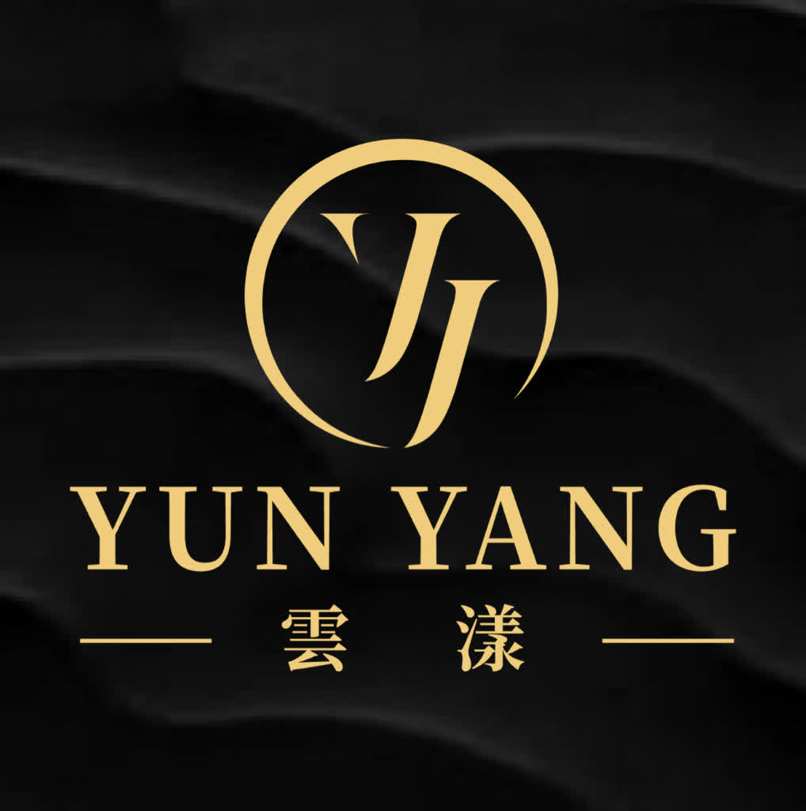

靈魂指南針
探尋生命數字的奧秘，
找回專屬於您的能量頻率。
請依照 YYYYMMDD 格式輸入
啟動能量分析
✨ 給您的能量絮語
🌿
真心建議的能量媒介：
關於雲漾的能量堅持：
• 純淨度 (Clarity)：
我們挑選高淨度礦石確保能量傳導無雜訊。
• 稀有性 (Rarity)：
頂級原礦是大自然億萬年的精華，與您的能量相稱。
• 頻率契合度：
完整的晶體結構能產生穩定的「壓電效應」。
了解更深層的自己 (預約 LINE 諮詢)
了解更深層的自己 (官網探索)
📸 返回 Instagram 探索更多